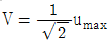
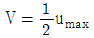
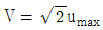
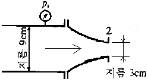
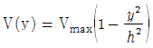
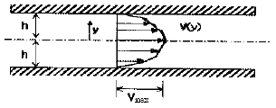
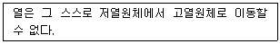

소방설비기사(기계분야) (2003-05-25 기출문제)
1과목: 소방원론
1. 건축물의 화재안전대책중 공간적 대응이 아닌 것은?
- 피난계단
- 특별피난계단
- 방화구획
- 제연설비
(정답률: 68%)

2. 건물 내부를 방화구획을 하는데 따른 효과로 볼 수 없는 것은?
- 인접구역으로의 화재확대 방지
- 후레쉬 오버의 억제
- 화재의 제한
- 화재진압 효과의 증대
(정답률: 53%)
3. 소화의 방법이 아닌 것은?
- 제거소화
- 냉각소화
- 질식소화
- 표면소화
(정답률: 73%)
4. 화재시 소방기관에 통보하는 내용으로 중요 사항이 아닌 것은?
- 부상자와 위험물 등의 유무
- 연소상황과 연소물건
- 발화건물 등의 소재지와 명칭
- 화재의 발생 사유
(정답률: 46%)
5. 불티가 바람에 날리거나 또는 화재 현장에서 상승하는 열기류 중심에 휩쓸려 원거리 가연물에 착화하는 현상을 무엇이라 하는가?
- 비화
- 전도
- 대류
- 복사
(정답률: 63%)
6. 알킬알미늄 화재시 취하여야 할 방법은?
- 화점에 물을 주수(注水)하여 냉각소화한다.
- 화점 주위에 이산화탄소를 방사하여 질식소화한다.
- 주변의 연소(燃燒)를 방지하고 자연 진화되도록 내버려둔다.
- 화점에 포말을 발사하여 질식 및 냉각소화한다.
(정답률: 43%)
7. 디토네이션(Detonation)에 대한 설명이다. 틀린 것은?
- 발열반응으로서 연소의 전파속도가 그 물질내에서의 음속보다 느린 것을 말한다.
- 물질내 충격파가 발생하여 반응을 일으키고 또한 그 반응을 유지하는 현상이다.
- 충격파에 의해 유지되는 화학반응현상이다.
- 반응의 전파속도가 그 물질내에서의 음속보다 빠른 것을 말한다.
(정답률: 40%)
8. 하론 1301의 증기 비중은 약 얼마 정도 되는가? (단, 공기의 평균분자량은 약 28.8이며, CF3Br≒149 이다)
- 4.17
- 5.17
- 6.17
- 7.17
(정답률: 46%)
9. 목재 화재시 다량의 물을 뿌려 소화하고자 한다. 이때 소화효과로서 가장 크게 기대되는 것은?
- 질식소화효과
- 냉각소화효과
- 부촉매소화효과
- 희석소화효과
(정답률: 71%)
10. 분진폭발을 일으킬 수 없는 것은?
- 유황가루
- 알미늄분말
- 플라스틱
- 석회석분말
(정답률: 50%)
11. 방화진단의 조건으로 거리가 가장 먼 것은?
- 인접한 건축물의 구조
- 건물의 실내장식
- 항공장애등 설비의 유지 상황
- 휴일과 야간의 수용인원 파악
(정답률: 38%)
12. 일반 건축물에 피뢰설비를 1개 설치하였을 경우 보호각의 범위는 일반적으로 몇 도로 하는가?
- 30
- 45
- 60
- 90
(정답률: 28%)
13. 연소를 이루기위한 열원으로서 전기에너지에 해당되지 않는것은?
- 아크열
- 유도열
- 마찰열
- 저항열
(정답률: 64%)
14. 목조건물의 화재가 발생하여 최성기에 도달할 때, 연소 온도는 약 몇 ℃ 정도 되는가?
- 300
- 800
- 1300
- 1800
(정답률: 41%)
15. 액화석유가스(LPG)에 대한 성질로 틀린 것은?
- 무색, 무취이다.
- 물에 녹지 않으나 유기용매에 용해된다.
- 공기중에서는 쉽게 연소, 폭발하지 않는다.
- 천연고무를 잘 녹인다.
(정답률: 60%)
16. 가연물질의 구비조건으로 옳지 않은 것은?
- 연쇄반응을 일으킬 수 있어야 한다.
- 열의 축적이 용이하여야 한다.
- 점화원인 활성화 에너지가 적어야 한다.
- 산소와 결합할 때 발열량이 적어야 한다.
(정답률: 48%)
17. 일반 콘크리트 내화건물의 화재시 피난하는 사람에게 치명적으로 피해를 가장 많이 줄 수 있는 것은?
- 열
- 연기
- 수증기
- 소화약제
(정답률: 63%)
18. 화재시에 발생하는 연소 생성물을 크게 분류하면 4가지로 분류할 수 있다. 이에 해당되지 않는 것은?
- 암모니아, 시안화수소 등의 연소가스 및 연기
- 대기중에서 물질이 탈 때 나타나는 화염
- 열(Heat)
- 점화원
(정답률: 49%)
19. 다음 설명중 옳은 것은?
- PVC나 폴리에틸렌의 저장창고에서 발생한 화재는 D급화재이다.
- 탄화칼슘은 물과 반응하여 가연성가스인 수소를 발생하며, 발열한다.
- 가연물질의 연소색상중 가장 낮은 온도는 일반적으로 담암적색이다.
- 우리나라의 화재발생 건수를 발생 장소별로 구분할 때 그 빈도수가 가장 높은 곳은 사무실 건물이다.
(정답률: 40%)
20. 건축물에서 내화구조물로 하지 않아도 되는 것은?
- 건축물의 옥외계단
- 건축물의 벽체
- 건축물의 기둥
- 건축물의 보
(정답률: 75%)
2과목: 소방유체역학
21. 원관 속의 유체가 층류로 흐를때 최대속도(umax)와 평균속도 (V)와 관계를 바르게 나타낸 것은 ?
- V = 2umax



(정답률: 23%)
22. 파이프내를 흐르는 유체의 유량을 파악할 수 있는 기능을 갖지 않은 것은?
- 벤츄리 미터
- 사각 위어
- 오리피스 미터
- 로타 미터
(정답률: 57%)
23. 공기는 산소와 질소의 혼합가스로 체적의 1/5이 산소이고 나머지는 질소이다. 표준상태(0℃ 760 mmHg)에서 공기의 밀도는 몇 kg/m3 인가?
- 24.4
- 1.28
- 0.43
- 13.4
(정답률: 22%)
24. 그림과 같이 비중이 0.8인 기름이 노즐로부터 분출하고 있다. 노즐 입구의 계기 압력이 P1= 686.5 kPa일 때, 노즐이 받는 힘은 몇 N 인가?

- 3496
- 1246
- 946
- 300
(정답률: 10%)
25. 폭 w를 갖는 평행 평판 사이의 포물선 유속 분포가 다음과 같을 때 운동량 수정계수 값은? (

)
- 2/3
- 2/5
- 6/5
- 8/3
(정답률: 35%)
26. 다음은 어떤 열역학 법칙을 설명한 것인가?

- 열역학 제 0법칙
- 열역학 제 1법칙
- 열역학 제 2법칙
- 열역학 제 3법칙
(정답률: 62%)
27. 비중이 0.01인 유체가 지름 30 cm인 관내를 98 N/s로 흐른다. 이때의 평균유속은 몇 m/s인가?
- 4.254
- 14.15
- 849
- 157.22
(정답률: 39%)
28. 소화약제 및 소화기구에 관한 설명으로 틀린 것은?
- 소화약제라 함은 물 기타 방염성이 있는 물질을 가공하여 소화성능을 개선한 것이다.
- 소화약제에 의한 간이 소화용구라 함은 소화기 이외의 것으로 소화약제가 충전되어 소화용으로 사용하는 기구이다.
- 자동 확산 소화용구라 함은 투척하여 자동적으로 소화하는 소화용구를 말한다.
- 포 소화약제라 함은 기제에 포 안정제 기타의 약제를 첨가한 액상의 것으로 물과 일정한 농도로 혼합하여 공기를 기계적으로 혼입시킴으로서 포를 발생시켜 소화하는 약제를 말한다.
(정답률: 50%)
29. 온도가 T인 유체가 정압이 P인 상태로 관속을 흐를 때 공동현상이 발생하는 조건으로 가장 적절한 것은? (단, 유체의 온도 T에 해당하는 포화압력은 Ps 라 한다.)
- P ＞ Ps
- P ＞ 2×Ps
- P＜ Ps
- P＜ 2×Ps
(정답률: 60%)
30. CO 5 kg을 일정한 압력하에 25℃에서 60℃로 가열하는데 필요한 열량은 몇 kJ 인가? (단, 정압비열은 0.837 kJ/kg ℃ 이다.)
- 1⑤
- 146
- 251
- 356
(정답률: 42%)
31. 600 L/min의 유량으로 비중이 0.9, 점성계수가 0.06N.s/m2 인 기름이 지름 100 mm인 관속으로 흐르고 있다. 관의 길이가 300 m라 하면 손실수두는 몇 m 인가?
- 8.1
- 8.3
- 8.5
- 8.7
(정답률: 40%)
32. 화학포 소화약제에 대한 설명 중 틀린 것은?
- 소화약제는 A 약제, B 약제 단독으로 발포해도 소화효과가 있다.
- 소화약제의 주성분은 황산 알루미늄과 탄산 수소나트륨이다.
- 소화약제는 A 약제와 B 약제가 있으며 분말상태에서도 혼합 저장할 수 있다.
- 소화약제는 A 약제와 B 약제를 각각 수용액으로 만들어 따로 저장할 수 있다.
(정답률: 35%)
33. 수평으로 놓인 관로에서, 입구의 관지름이 65mm, 유속이 2.5 m/s이며 출구의 관지름이 40mm라고 한다. 입구에서의 압력이 350 kPa이라면 출구에서의 압력은 몇 kPa 인가? (단, 마찰손실은 무시하고 밀도는 1000 kg/m3 이다.)
- 311
- 321
- 331
- 341
(정답률: 26%)
34. 물을 펌핑하고 있는 어느 수평 회전축 원심펌프에서 흡입구측에 설치된 진공계가 460mmHg를 가리키고 있었다면 이 펌프의 이론 흡입 양정은 몇 m 인가? (단, 대기압은 표준대기압 상태이다.)
- 6.25
- 5.24
- 4.07
- 3.28
(정답률: 43%)
35. 점성계수를 직접 측정하는데 적합한 것은?
- 피토트관(pitot tube)
- 슈리렌법(schlieren method)
- 벤튜리미터(venturi meter)
- 세이볼트법(saybolt method)
(정답률: 32%)
36. 유체의 정압의 성질에 대한 설명으로 맞는 것은?
- 유체의 압력은 작용면에 수평으로 작용한다.
- 개방된 용기(open vessel)에 작용하는 유체의 압력은 밀도에 반비례한다.
- 개방된 용기(open vessel)에 작용하는 유체의 압력은 유체의 깊이에 반비례한다.
- 밀폐된 용기에서 어느 한점에 작용하는 압력은 모든 방향에 같은 크기로 작용한다.
(정답률: 53%)
37. 다음 분말약제의 입자크기와 소화효과에 관한 설명이다. 옳은 것은?
- 입자는 10미크론 이하의 작은입자가 소화효과가 좋다
- 입자는 클수록 소화효과가 좋다.
- 입자는 20 ~ 25 미크론 정도가 소화효과가 좋다.
- 입자의 크기와 소화효과는 관계가 없다.
(정답률: 47%)
38. 에테르, 케톤, 에스테르 등 수용성 가연물의 소화에 가장 적합한 포소화약제는?
- 단백포
- 수성막포
- 불화단백포
- 내알콜포
(정답률: 39%)
39. 다음 설명 중 옳지 않은 것은?
- 비점성 유체는 유동 시 마찰 저항이 유발되지 않는 유체를 말한다.
- 비압축성 유체는 압력에 대해 체적이 일정하게 변한다.
- 유체는 고체와 달리 전단 응력에 견디지 못한다.
- 유체는 전단 응력이 작용하지 않는 경우 결국 정지한다.
(정답률: 49%)
40. 물이 들어 있는 U자관 속에 기름을 넣었더니 기름 25cm와 물 15cm의 액주가 평형을 이루었다면 이 기름의 비중은?
- 0.3
- 0.6
- 0.7
- 1.7
(정답률: 67%)
3과목: 소방관계법규
41. 위험물안전관리자를 해임한 때에는 해임한 날부터 몇 일 이내에 위험물안전관리자를 선임하여야 하는가?
- 7
- 15
- 20
- 30
(정답률: 57%)
42. 위험물탱크 안전성능시험자가 되고자 하는 사람은 행정자치부령이 정하는 기술능력.시설 및 장비를 갖추어 시·도지사에게 등록하여야 한다 이 경우 행정자치부령이 정하는 중요사항 중 변경사항이 있는 때에는 그 변경후 몇일 이내에 변경 신고를 하여야 하는가?
- 10
- 20
- 30
- 40
(정답률: 30%)
43. 비상경보설비를 설치하여야 할 소방대상물 중 잘못된것은?
- 상시 50인 이상의 근로자가 작업하는 옥내작업장
- 지하가중 터널로서 길이가 500미터 이상인 것
- 연면적이 500제곱미터 이상인 것
- 지하층 또는 무창층의 바닥면적이 150제곱미터 이상인 것
(정답률: 22%)
44. 관계인 등의 요청이 있는 경우 소방용 기계·기구등에 대한 성능시험은 어디에서 하는가?
- 한국소방안전협회
- 시·도지사의 위탁을 받은 한국방재시험연구소
- 산업자원부가 지정한 한국기계연구소
- 행정자치부장관의 위탁을 받은 기관
(정답률: 50%)
45. 화재경계지구로 지정하지 않아도 되는 지역은?
- 공장, 창고 등이 밀집한 지역
- 아파트가 밀집한 지역
- 석유화학제품을 생산하는 공장이 있는 지역
- 목조건물이 밀집한 지역
(정답률: 52%)
46. 소방대상물의 관계인이 아닌 것은?
- 소유자
- 공사업자
- 관리자
- 점유자
(정답률: 67%)
47. 구급대의 편성·운영에 관한 설명 중 올바른 것은?
- 소방서장은 필요한 때 의료기관으로부터 구급차를 지원 받을 수 있다.
- 구급대는 위급환자에 대해 신속한 치료가 그 목적이다.
- 의료기관의 지원에 관한 사항은 관할 시·도지사와 협의하여 정한다.
- 환자를 이송하던 중 환자가 사망한 경우는 국고에서 위자료를 지급한다.
(정답률: 38%)
48. 간선 또는 지선도로의 폭과 거리, 교통의 상황, 토지의 고·저, 건축물의 개황 그 밖의 소방활동에 필요한 지리의 조사에서 월 몇회 이상 실시하여야 하는가?
- 1회
- 2회
- 3회
- 4회
(정답률: 62%)
49. 연결살수설비를 설치하여야 할 소방대상물의 기준면적은 학교의 지하층인 경우 바닥면적의 합계가 몇 m2 이상인 것인가?
- 700
- 800
- 900
- 1000
(정답률: 35%)
50. 소화활동설비에 해당되는 것은?
- 누전경보기
- 연소방지설비
- 자동화재속보설비
- 비상방송설비
(정답률: 52%)
51. 소방법상의 「관계지역」에 해당되지 않는 것은?
- 위험물 저장소 주위
- 건물의 옥상
- 항해중인 상선
- 주민대피용 방공호 내부
(정답률: 66%)
52. 다음중 위험물 취급 건축물에 채광ㆍ조명 및 환기설비의 설치기준으로 틀린 것은?
- 채광면적은 최소로 한다.
- 환기는 강제배기방식으로 한다.
- 급기구는 낮은 곳에 설치한다.
- 점멸스위치는 출입구 바깥부분에 설치한다.
(정답률: 32%)
53. 소방용수시설의 수원에 대한 기준으로 맞지 않는 것은?
- 지면으로부터 낙차가 6m이하일 것
- 흡수부분의 수심이 0.5m이상일 것
- 소방펌프자동차가 용이하게 접근할 수 있을 것
- 흡수에 지장이 없도록 토사, 쓰레기 등을 제거할 수 있는 설비를 할 것
(정답률: 45%)
54. 자동화재탐지설비의 사용전원에서 자동화재탐지설비에는 그 설비에 대한 감시상태를 60분간 지속한 후 유효하게 몇분 이상 경보할 수 있는 축전지설비를 설치하여야 하는 가?
- 25
- 20
- 15
- 10
(정답률: 41%)
55. 위험물제조소에서 위험물을 취급할 때에는 정전기를 제거하는 설비를 하여야 하여야 한다. 정전기를 유효하게 제거할 수 있는 방법이 될 수 없는 것은?
- 접지를 한다.
- 공기중의 상대습도를 70% 이상으로 한다.
- 공기를 이온화한다.
- 종단저항을 설치한다.
(정답률: 47%)
56. 제5류위험물로 자기반응성 물질은?
- 염소산염류
- 과염소산염류
- 질산염류
- 유기과산화물류
(정답률: 43%)
57. 방화관리자를 30일이내에 선임하여야 하는 기준일로 적합하지 못한 것은?
- 신축 등으로 처음 방화관리자를 선임하는 경우에는 완공일
- 증축 또는 용도변경으로 1급 또는 2급 방화관리대상물이 된 때에는 그 공사의 완공일
- 증축 또는 용도변경으로 방화관리등급이 변경되는 때에는 건축허가일
- 방화관리자를 해임한 때에는 그 해임한 날
(정답률: 34%)
58. 감지기의 설치장소로서 옳은 것은?
- 보상식 스포트형감지기는 정온점이 감지기 주위의 평상시 최고온도보다 섭씨30도이상 높은 것으로 설치하여야 한다.
- 스포트형 감지기는 50도 이상 경사되지 아니 하도록 부착할 것
- 감지기는 천정 또는 반자의 옥내에 면하는 부분에 설치할 것
- 감지기는 실내로의 공기유입구로부터 2.0미터이상 떨어진 위치에 설치할 것
(정답률: 42%)
59. 화재현장에서 소화활동을 원활히 수행하기 위하여 규정하고 있는 사항이 아닌 것은?
- 피난명령
- 소화종사명령
- 소방응원
- 화재경계지구의 지정
(정답률: 40%)
60. 주유취급소의 고정주유설비중 자동차 등에 직접 주유하기 위한 고정주유설비의 주위에는 주유를 받으려는 자동차 등이 출입할 수 있도록 너비 몇 m 이상, 길이 몇 m 이상의 콘크리트로 포장한 공지를 보유하여야 하는가?
- 너비:12m, 길이:4m
- 너비:12m, 길이:6m
- 너비:15m, 길이:4m
- 너비:15m, 길이:6m
(정답률: 31%)
4과목: 소방기계시설의 구조 및 원리
61. 연결 살수설비의 구조를 이루는 부속물이 아닌 것은?
- 폐쇄형 헤드
- 송수구역 선택 밸브
- 단구형 송수구
- 준비작동식 밸브
(정답률: 26%)
62. 간이소화용구인 마른모래 50ℓ , 5 포와 삽을 비치한 상태 일 때 능력단위는 얼마인가?
- 1.5 단위
- 2 단위
- 2.5 단위
- 4 단위
(정답률: 56%)
63. 이산화탄소 소화설비에 사용되는 이산화탄소 용기의 허용충전비는 얼마인가? (단, 고압용기식이다.)
- 1.5 이상 1.9 이하
- 1.2 이상 1.5 이하
- 1.0 이상 1.3 이하
- 0.8 이상 1.0 이하
(정답률: 64%)
64. 스프링클러 설비의 시험배관에 관한 설명으로 틀린 것은?
- 시험배관은 알람 밸브로 부터 수리적으로 가장 먼 곳에 있는 헤드의 가지관에서 연장하여 설치한다.
- 시험배관은 준비 작동식 설비에는 설치할 필요가 없다.
- 시험배관의 말단에는 실제 그 구역에 설치된 헤드와 동일한 오리피스를 가진 개방형의 헤드를 설치하면 된다.
- 시험배관을 이용한 알람밸브의 기능시험은 매일 실시하는 것이 원칙이다.
(정답률: 38%)
65. 수류를 살수판에 충돌하여 미세한 물방울을 만드는 스프링클러 헤드를 무슨 형이라 하는가?
- 디프렉타형
- 충돌형
- 슬리트형
- 분사형
(정답률: 54%)
66. 성능이 같은 두대의 소화펌프를 양정이 Hm인 것을 병열로 연결하였을 때의 양정은?
- 0.5Hm
- Hm
- 1.5Hm
- 2Hm
(정답률: 52%)
67. 바닥면적이 400m2 인 차고에 모터펌프를 이용하여 물분무 소화설비를 설치하고자 한다. 수원의 최저 수량은 몇 m3인가?
- 20
- 30
- 40
- 80
(정답률: 44%)
68. 제연구역에 대한 내용 중 잘못된 것은?
- 제연구역에 구획은 보, 제연 경계벽 및 벽으로 하여야 한다.
- 하나의 제연구역은 직경이 최대 50m인 원안에 들어갈 수 있어야 한다.
- 하나의 제연구역 면적은 1,000m2 이하 이어야 한다.
- 거실과 통로는 상호 제연구획을 하여야 한다.
(정답률: 63%)
69. 호스릴 분말소화설비에서 하나의 노즐에 대한 소화약제의 양으로 잘못된 것은?
- 제1종 분말 50kgf이상
- 제2종 분말 30kgf이상
- 제3종 분말 30kgf이상
- 제4종 분말 40kgf이상
(정답률: 67%)
70. 다음은 특별피난계단 부속실 등에 설치하는 급기가압방식 제연설비의 측정, 시험, 조정 항목을 열거한 것이다. 맞지 않는 것은?
- 출입문의 크기, 개폐방향이 설계도면과 일치하는지 여부 확인
- 출입문과 바닥 사이의 틈새가 균일한지 여부 확인
- 화재감지기 동작에 의한 설비 작동 여부 확인
- 피난구의 설치 위치 및 크기의 적정 여부 확인
(정답률: 36%)
71. 옥내소화전설비의 설치 방법 중 맞는 것은?
- 함의 재질은 강판 1.6mm 이상이어야 한다.
- 하나의 소화전함에서 다음 소화전함까지는 25m거리 이내이어야 한다.
- 개폐밸브의 위치는 항상 왼쪽에 있어야 한다.
- 개폐밸브의 위치는 바닥으로 부터 1.5m 이하여야 한다.
(정답률: 20%)
72. 청정소화약제 중에서 IG-541의 혼합가스 성분비는?
- Ar 52%, N2 40%, CO2 8%
- N2 52%, Ar 40%, CO2 8%
- CO2 52%, Ar 40%, N2 8%
- N2 10%, Ar 40%, CO2 50%
(정답률: 46%)
73. 이산화탄소 소화기에 대한 설명 중 부적절한 것은?
- 전기 화재에 적응성이 좋다.
- 용기는 고압가스 안전관리법에 의거 제조되고 250kgf/cm2의 내압시험에 합격해야 한다.
- 충전비는 1.5 이상이다.
- 약제의 충전량이 30kgf 이상시 대형 소화기로 분류된다.
(정답률: 38%)
74. 소방법 시행령 제 23조의 규정에 의한 자체 소방대를 둔 위험물 제조소에 옥외소화전이 18개 설치되어 있다. 옥외 소화전 함은 최소 몇 개를 분산하여 설치 하여야 하는가?
- 10개 이상
- 11개 이상
- 15개 이상
- 18개 이상
(정답률: 43%)
75. 상수도 소화용수용 소화전 설치시 소화전 1개의 유효 거리는 얼마인가?
- 140 m
- 150 m
- 160 m
- 200 m
(정답률: 64%)
76. 물분무 소화설비의 소화작용이 아닌 것은?
- 차단효과
- 냉각효과
- 질식효과
- 유화효과
(정답률: 40%)
77. 폐쇄형 스프링클러 설비 하나의 방호구역은 어느 것인가?
- 바닥면적 4,000m2
- 바닥면적 3,000m2
- 바닥면적 2,000m2
- 바닥면적 1,000m2
(정답률: 55%)
78. 포소화설비에 관하여 필요치 않은 부분은?
- 포원액 교반장치
- 포혼합장치
- 포방출구
- 가압송액장치
(정답률: 26%)
79. 다음중 수직 강하식 구조대의 대본체 재질에 관한 것으로 적당한 것은?
- 대본체는 전체가 균질의 신축성이 풍부한 재질로 되었다.
- 대본체는 일정 간격으로 마련된 협축부 만이 신축성이 많은 특수 심으로 되어 있다.
- 협축부는 고무실이 들어 있는 면범포이다.
- 대본체는 나이론 섬유로 되어 있다.
(정답률: 23%)
80. 가솔린을 저장하는 고정지붕식의 옥외탱크에 설비하는 포소화설비에서 포를 방출하는 기기는 어느 것인가?
- 폼워터 스프링클러헤드
- 폼워터 스프레이헤드
- 포 헤드
- 고정포 방출구(폼챔버)
(정답률: 48%)